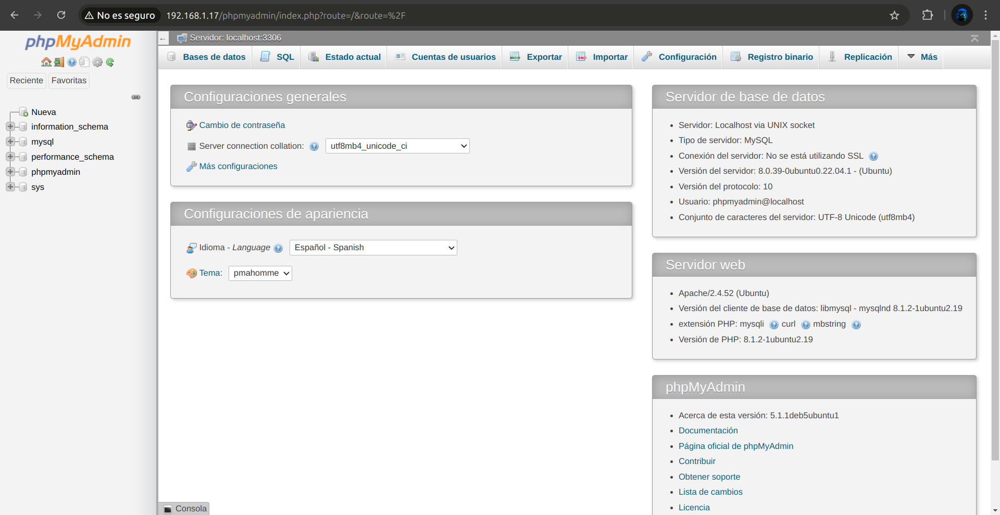
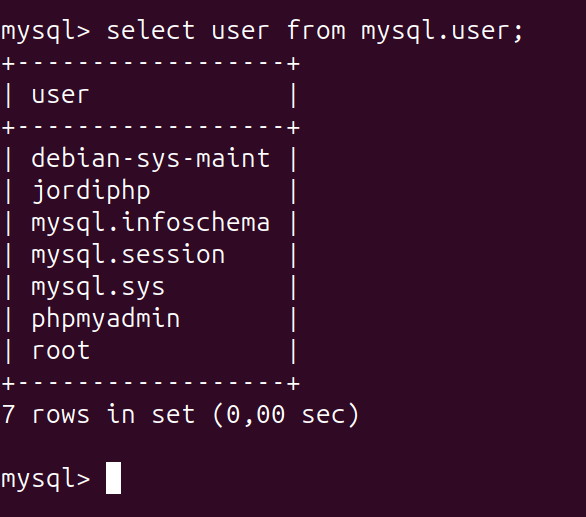
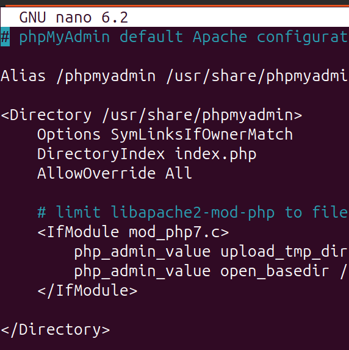
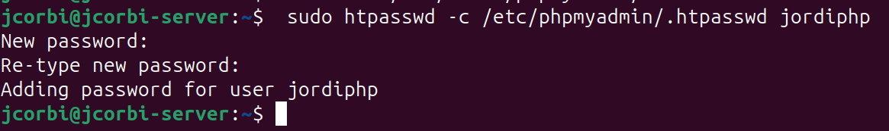
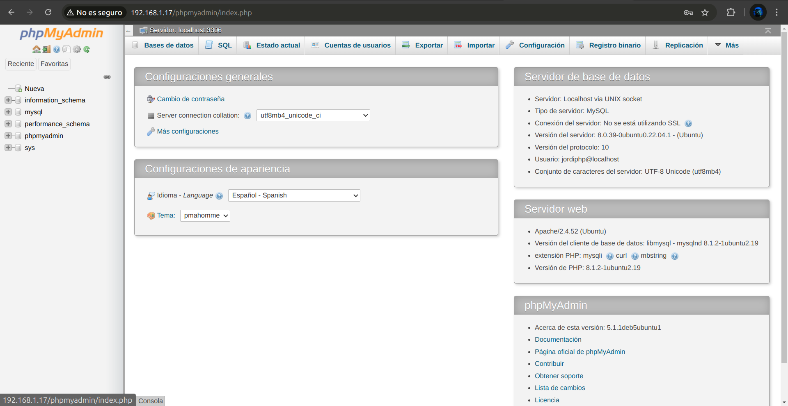

Practica 03: Instalar, configurar y securizar phpMyAdmin¶
Objetivos de la práctica
- Instalar, asegurar y configurar phpMyAdmin en un servidor Ubuntu.
- Proteger PhpMyAdmin contra accesos no autorizados.
- Automatizar la instalación y configuración de phpMyAdmin mediante scripts de Bash.
Instalación de phpMyAdmin¶
-
Instala phpMyAdmin junto con las extensiones PHP necesarias (
php-mbstring,php-zip,php-gd,php-json,php-curl).sudo apt update- php-mbstring: Un módulo para gestionar cadenas no ASCII y convertir cadenas a diferentes codificaciones
- php-zip: Esta extensión soporta la carga de archivos .zip en phpMyAdmin
- php-gd: Habilita el soporte para la Biblioteca Gráfica GD
- php-json: Proporciona a PHP soporte para la serialización JSON
- php-curl: Permite que PHP interactúe con diferentes tipos de servidores usando diferentes protocolos
sudo apt install phpmyadmin php-mbstring php-zip php-gd php-json php-curl
-
Configura phpMyAdmin para que funcione con Apache. Per a que php funcione en Apache2 tindrem que crear un usuari per a php i donar-li permisos.
mysql> create user 'phpmyadmin'@'localhost' identified by 'phpmyadmin'; mysql> grant all privileges on *.* to 'phpmyadmin'@'localhost'; mysql> flush privileges -
Habilita la extensión mbstring y reinicia Apache. Para habilitar explícitamente la extensión PHP mbstring, lo cual puedes hacer escribiendo:
 Figura.1 Comprovación phpmyadminsudo phpenmod mbstring
1. Configuración del Acceso por Contraseña para la Cuenta Root de MySQL¶
-
Cambia el método de autenticación del usuario root de MySQL de auth_socket a caching_sha2_password o mysql_native_password.
- Accedemos a la base de datos:
sudo mysql - A continuación, verifica qué método de autenticación usa cada una de tus cuentas de usuario de MySQL con el siguiente comando:
mysql> SELECT user,authentication_string,plugin,host FROM mysql.user; - Cambiar metodo de authentificación y contraseña.
mysql> ALTER USER 'root'@'localhost' IDENTIFIED WITH 'caching_sha2_password' BY 'Root_pass1';
- Accedemos a la base de datos:
-
Verifica los métodos de autenticación empleados por cada uno de tus usuarios.
- A continuación, verifica qué método de autenticación usa cada una de tus cuentas de usuario de MySQL con el siguiente comando:
mysql> SELECT user,authentication_string,plugin,host FROM mysql.user;
- A continuación, verifica qué método de autenticación usa cada una de tus cuentas de usuario de MySQL con el siguiente comando:
2. Configuración del Acceso por Contraseña para un Usuario Dedicado de MySQL¶
-
Crea un nuevo usuario de MySQL con una contraseña segura.
mysql> create user 'jordiphp'@'localhost' identified by 'jordiphp'; -
Otorga al nuevo usuario los privilegios apropiados para gestionar las bases de datos a través de phpMyAdmin.
mysql> grant all privileges on *.* to 'jordiphp'@'localhost'; mysql> flush privileges
3. Asegurando tu Instancia de phpMyAdmin¶
-
Habilita el uso de sobrescrituras de archivos .htaccess en la configuración de Apache para phpMyAdmin.
- Usa tu editor de texto preferido para editar el archivo phpmyadmin.conf que se ha colocado en el directorio de configuración de Apache. Aquí, usaremos nano:
sudo nano /etc/apache2/conf-available/phpmyadmin.conf - Agrega una directiva AllowOverride All dentro de la sección
del archivo de configuración, así: <Directory /usr/share/phpmyadmin> Options SymLinksIfOwnerMatch DirectoryIndex index.php AllowOverride All ... # Otras directivas </Directory> - Para implementar los cambios que realizaste, reinicia Apache:
sudo systemctl restart apache2
- Usa tu editor de texto preferido para editar el archivo phpmyadmin.conf que se ha colocado en el directorio de configuración de Apache. Aquí, usaremos nano:
-
Crea un archivo .htaccess en el directorio de phpMyAdmin para implementar autenticación básica.
- Para que esto sea exitoso, el archivo debe ser creado dentro del directorio de la aplicación. Puedes crear el archivo necesario y abrirlo en tu editor de texto con privilegios de root escribiendo:
sudo nano /usr/share/phpmyadmin/.htaccess - Dentro de este archivo, ingresa la siguiente información:
AuthType Basic AuthName "Restricted Files" AuthUserFile /etc/phpmyadmin/.htpasswd Require valid-user
- Para que esto sea exitoso, el archivo debe ser creado dentro del directorio de la aplicación. Puedes crear el archivo necesario y abrirlo en tu editor de texto con privilegios de root escribiendo:
-
Crea un archivo .htpasswd para almacenar las credenciales de usuario y contraseña.
-
Ahora puedes crear este archivo y asignarle un usuario inicial con la utilidad htpasswd:
sudo htpasswd -c /etc/phpmyadmin/.htpasswd jordiphp -
Si deseas agregar un usuario adicional, debes hacerlo sin la bandera -c, así:
sudo htpasswd /etc/phpmyadmin/.htpasswd usuarioadicional
-
-
Reinicia Apache para aplicar los cambios.
- Luego, reinicia Apache para aplicar la autenticación de .htaccess:
sudo systemctl restart apache2
- Luego, reinicia Apache para aplicar la autenticación de .htaccess: